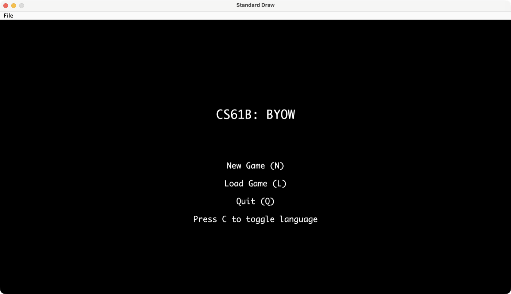
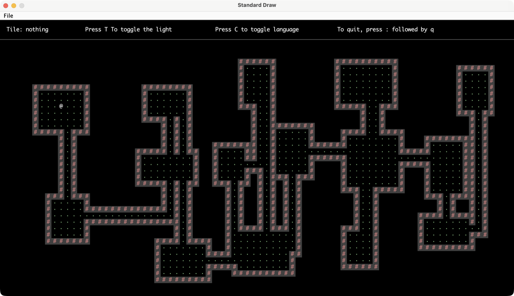
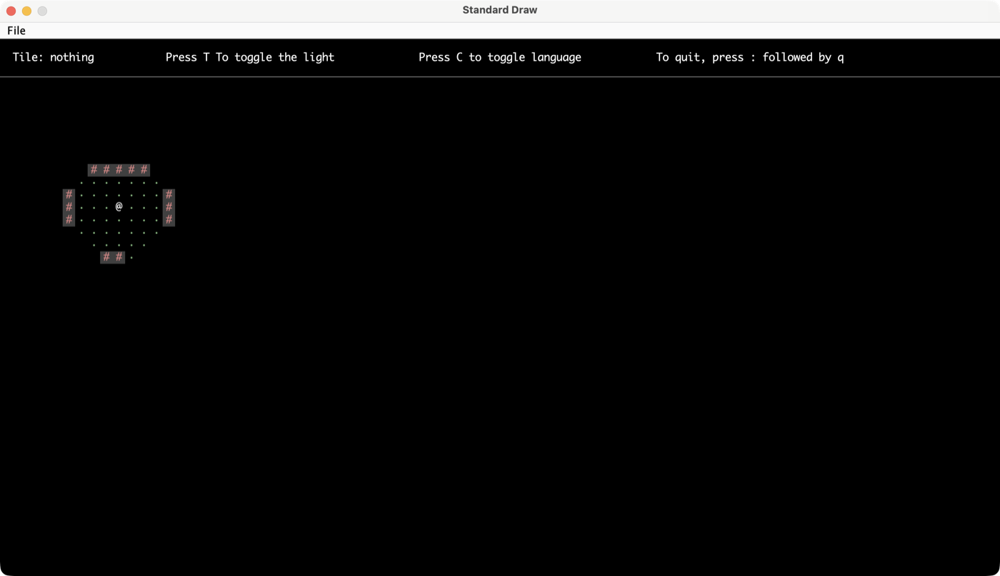

Build Your
Own World.
A procedurally-generated 2D dungeon explorer written from scratch in Java — custom tile-rendering engine, seeded world generation, fog-of-war, and save/load persistence.
HeadlineEvery world reproducible from a single seed · fog-of-war, save/load, and an English/Spanish HUD, all hand-written in Java
Problem
BYOW is Project 5 of UC Berkeley's CS61B (Data Structures), built with a partner (group g20). The goal: design and implement your own interactive world from the ground up — no game engine, no rendering library beyond a bare-bones tile drawer. Everything from the dungeon layout algorithm to the HUD to save/load persistence is hand-written.
Every world is generated from a random seed: the same seed always reproduces the exact same layout of rooms, hallways, and starting position, which made the generation logic testable and let us debug specific "unlucky" seeds that produced disconnected or degenerate maps.
Approach
- Procedural dungeon generation — a seeded RNG places a random number of rectangular rooms, then carves L-shaped hallways to connect every room into a single traversable graph.
- Real-time game loop — polls keyboard input every frame (WASD to move) and re-renders only what's changed, following the same input/update/render loop structure taught in the course's demo classes.
- Fog-of-war lighting — tiles outside a radius around the avatar (or not in line-of-sight) are hidden, toggled on/off with a keypress; see the two screenshots below of the same dungeon lit vs. dark.
- Save & load — serializes the world's seed, avatar position, and state to disk so a session can be resumed later.
- English / Spanish HUD — the whole heads-up display can be toggled between languages on the fly.
Results
Gameplay demo
A real recording of the game running — seed entry, world generation, moving around with fog-of-war on, toggling full lighting, and the click-to-path indicator tracing a route to a clicked tile.
Screenshots



What broke, and how we handled it
Some seeds generated broken maps
- Symptom
- Certain "unlucky" seeds produced disconnected or degenerate dungeons, with rooms the player couldn't reach.
- Approach
- Because generation is fully seeded, a bad world is perfectly reproducible: we could re-run the exact seed, inspect the layout, change the generator, and confirm the same seed now produced a connected map.
What I learned
- Determinism makes randomness testable. Seeding every random choice turned "sometimes the map is broken" into a bug we could reproduce on demand. I used the same idea later to make robot-simulation replays reliable in my Algoverse research.
- Build the engine, then the features. Writing the input / update / render loop first made fog-of-war, the HUD, and save/load straightforward to add.
Berkeley-CS61B-Student GitHub
org (course policy for academic-integrity reasons), so the link above will 404 for
anyone without course access — it's kept here as the canonical source location.